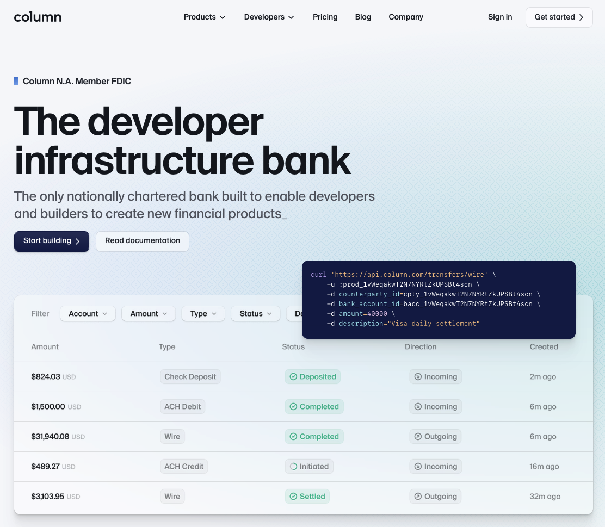

The Modern Banking Book: Interest Income#
As fintech reshapes financial services, the traditional banking model is evolving to incorporate both Banking-as-a-Service (BaaS) and fintech-enabled offerings. Here, we explore how modern banking operations—impact the banking book, non-interest income, core systems, and risk management. Our goal is to create a view around the impact of innovation, addressing legacy / risk challenges, and meeting new market demands.
Banking Book: Interest and Non-Interest Income#
The banking book, a critical revenue generator for financial institutions, is being reshaped by fintech innovations that enhance both interest and non-interest income. As a result, the traditional banking model is undergoing a significant transformation, driven by the evolving preferences of consumers and the rise of fintech innovation. At the heart of this transformation is the banking book, which is experiencing a significant shift in both interest and non-interest income streams. This section details these transformations.
Interest Income Evolution:#
Interest income remains the main staple of banking revenue, derived primarily from loans and deposits. Fintechs and Modern Banks innovate by blending digital platforms with personalized financial products to capture interest revenue through deposit-linked lending.
Modern business models, exemplified by Nubank, Klarna, and Brex, redefine banking products and revenue strategies, emphasizing adaptability, diversification, and innovation within regulatory boundaries. Consumer demand for personalized, digital, and user-friendly financial services drives transformation in banking books and lending capabilities, addressing legacy challenges and seizing emerging opportunities.
This shift sets the stage for further innovation, particularly in lending. The rapid consumer adoption of fintech offerings has revolutionized the lending landscape, transforming the way financial institutions originate, manage, and monetize loans. Modern lending platforms leverage cutting-edge technologies, including artificial intelligence (AI)-driven credit scoring, real-time data analysis, and automated underwriting processes. These advancements streamline loan approvals, enhance scalability, and enable lenders to cater to a broader demographic.
Modern fintech lending is characterized by:#
Enhanced Credit Assessment
AI-driven credit scoring for accurate and swift assessments
Alternative credit data expanding access for underserved populations
Efficient Loan Processing
Automated underwriting reducing manual intervention
Real-time data analysis for informed lending decisions
Optimized Loan Portfolios
Increased loan origination through automation
Improved credit quality reducing default risk
Diversified loan portfolios across diverse demographics
Dynamic Pricing
Competitive pricing responsive to market conditions through real-time data analysis
These innovations transform the lending landscape, enabling financial institutions to streamline operations, enhance credit quality and expand financial inclusion.
Risks Associated with Interest Income#
Navigating Risks in Modern Fintech Lending
As banking evolves, fintech lending introduces opportunities and challenges. Effective risk management is crucial for sustainable growth.
Operational and Regulatory Risks#
Regulatory changes impact interest rate risk management and capital reserves. Ineffective processes exacerbate operational risks. Banks must adapt to evolving regulatory landscapes.
Embedded Finance Risks#
Interoperability disruptions, data breaches and partnership complexities threaten revenue streams. Ensuring seamless system integration and robust data governance is vital.
Distributed Risk#
Complex ecosystems increase risk management and compliance challenges. Banks must navigate shared data and transactions across multiple parties.
Technological Integration Risks#
API vulnerabilities, legacy system integration challenges and cybersecurity threats compromise stability. Staying abreast of technological advancements is essential.
Legacy and Transition Risks#
Managing outdated infrastructure and migrating to new technologies/business models demands strategic planning. Change management facilitates smooth transitions.
Mitigating Risks#
To thrive, banks must:
Implement robust systems and risk assessments.
Prioritize regulatory compliance and customer data protection.
Continuously monitor and adapt to emerging risks.
By acknowledging and addressing these challenges, banking executives, regulators and developers can harness fintech’s potential while ensuring financial stability and customer trust.
Key Considerations for Stakeholders#
Banking Executives
Balance innovation with risk management.
Invest in scalable infrastructure.
Foster collaboration between fintech and traditional banking.
Develop comprehensive risk assessment frameworks.
Prioritize customer education and financial literacy.
Regulators
Establish clear guidelines for fintech lending.
Encourage collaboration and information sharing.
Ensure regulatory frameworks adapt to emerging technologies.
Implement robust consumer protection measures.
Facilitate open communication channels with industry stakeholders.
Developers
Prioritize security and interoperability.
Design adaptable solutions for evolving regulatory landscapes.
Integrate robust data governance and analytics.
Develop user-friendly interfaces for diverse customer bases.
Stay updated on emerging technologies and threats.
Policy Makers
Encourage innovation through supportive legislation.
Foster public-private partnerships for fintech advancement.
Ensure inclusive financial policies for underserved populations.
Support cybersecurity initiatives and data protection standards.
Promote international cooperation on fintech regulation.
Collective Responsibilities
Promote financial inclusion and accessibility.
Ensure consumer protection and education.
Foster collaboration and knowledge sharing.
Drive technological advancement and innovation.
Maintain financial stability and security.
By acknowledging these key considerations, stakeholders can work together to harness fintech’s potential, mitigate risks and create a resilient, innovative financial ecosystem.
Modern Lending Strategies for CDFIs: Boosting Interest Income#
Community Development Financial Institutions (CDFIs) can leverage modern lending concepts to amplify their economic impact and interest income:
Targeted lending: AI-driven credit scoring can identify creditworthy borrowers in low-income communities, promoting financial inclusion and increasing interest income through expanded loan portfolios
Streamlined loan processing: Automated underwriting can reduce costs and increase loan volume, supporting more small businesses and entrepreneurs, and generating additiona__l interest income
Customized loan products: Real-time data analysis can inform loan structuring, addressing specific community needs and optimizing interest income through competitive pricing
Hypothetical Example: Opportunity Fund#
Opportunity Fund, a CDFI, uses fintech-powered lending to provide microloans to low-income entrepreneurs. By leveraging alternative credit data and automated underwriting, Opportunity Fund:
Increased loan origination volume by 30%, generating additional interest income
Reduced default rates by 25%, maintaining a healthier banking book
Supported 500 additional small businesses, creating 1,500 jobs and stimulating $10 million in local economic activity
Tying it Back to the Banking Book:
Interest income growth: Modern lending concepts can increase loan origination, improve credit quality, and optimize pricing, leading to higher interest income
Banking book diversification: Expanded lending to underserved communities can enhance portfolio diversity, reducing risk and increasing resilience
Regulatory capital benefits: Improved credit quality and reduced default rates can lead to lower regulatory capital requirements, freeing up capital for additional lending and interest income generation
By embracing modern lending technologies, financial institutions can optimize their banking book interest income while driving positive economic impact in underserved communities. This synergy between fintech innovation and social responsibility has the potential to transform the financial landscape, promoting equitable economic growth and prosperity.
Column Bank Deep Dive#
Column Bank exemplifies fintech-driven lending, operating as a chartered bank with a developer-friendly infrastructure. Column generates interest income from consumer deposits, lines of credit, and term loans, and manages an investment portfolio leveraging real-time data analytics. By using its own banking license, Column combines compliance with innovation, offering tailored banking experiences through a digital-first approach. __ Launched in 2022, Column aims to revolutionize banking by providing a developer-friendly infrastructure for fintech innovation.

Business Model
Column operates as a chartered bank, leveraging its banking license to provide a range of financial services, including:
Banking-as-a-Service (BaaS): Column offers APIs and tools for developers to build custom banking applications.
Digital Banking: Column provides personal and business checking accounts, debit cards, and payment processing services.
Lending: Column offers loan products, including lines of credit and term loans.
Interest Income Streams Column generates interest income through:
Consumer Deposits: Interest earned on personal and business checking accounts.
Loan Products: Interest income from lending activities, such as lines of credit and term loans.
Investment Securities: Interest earned on investment portfolios.
Key Features
Developer Platform: Column provides APIs, SDKs, and documentation for developers to build custom banking applications.
Open Banking: Column supports open banking standards, enabling secure data sharing and integration with third-party applications.
Customizable Banking: Column’s platform allows users to create tailored banking experiences.
Real-time Payments: Column supports instant payment processing.
Partnerships and Collaborations
Column has partnered with various fintech companies, including:
Plaid: Integration with Plaid’s data network for secure account linking.
Wise: Enabling seamless and affordable cross-border payments.
Brex: Providing businesses with easy access to corporate credit cards.
Mercury: Offering banking services specifically designed for startups and fintech companies.
Competitive Advantage
Column’s competitive advantages include:
Developer-friendly infrastructure: Column’s APIs and tools enable seamless integration with fintech applications.
Chartered bank status: Column’s banking license provides regulatory compliance and stability.
Customizable banking: Column’s platform allows users to create tailored banking experiences.
Challenges and Opportunities
Challenges:
Regulatory compliance: Navigating evolving banking regulations.
Competition: Competition from established banks and fintech players.
Opportunities:
Fintech innovation: Column’s platform enables innovation in banking and financial services.
Expanding services: Potential expansion into new markets and product offerings.
Conclusion
Column is a pioneering digital banking platform, offering personalized financial solutions and a developer-friendly infrastructure. With its chartered bank status, customizable banking, and open banking support, Column is well-positioned to drive fintech innovation and growth.
Column’s Unique Positioning and Competitive Advantages#
Column, a digital banking platform, has carved out a distinctive niche in the fintech landscape, leveraging its chartered bank status and developer-friendly infrastructure. The Great Bank Unbundling, a trend outlined in Contrary Research’s report, highlights the fragmentation of banking services, creating opportunities for specialized players like Column.
Unique Positioning:
Banking-as-a-Service (BaaS) 2.0: Column’s platform provides a more advanced and customizable BaaS offering, enabling fintech companies to build tailored banking experiences.
Hybrid Bank-Fintech Model: By combining a chartered bank with a developer-friendly infrastructure, Column bridges the gap between traditional banking and fintech innovation.
Embedded Finance: Column’s platform facilitates embedded finance, allowing non-banking companies to integrate financial services into their products.
Competitive Advantages:
Chartered Bank Status: Column’s banking license provides regulatory compliance, stability, and access to the Federal Reserve System.
Developer-Friendly Infrastructure: Column’s APIs, SDKs, and documentation enable seamless integration with fintech applications.
Customizability: Column’s platform allows users to create tailored banking experiences, differentiating it from traditional banking and generic BaaS providers.
Open Banking Support: Column’s adherence to open banking standards enables secure data sharing and integration with third-party applications.
Innovation Hub: Column’s platform attracts fintech innovators, fostering a community that drives development and growth.
Moat:
Column’s competitive moat is built around its:
Regulatory Expertise: Deep understanding of banking regulations and compliance.
Technical Expertise: Developer-friendly infrastructure and API-based platform.
Network Effects: Growing ecosystem of fintech partners and developers.
Brand Reputation: Established credibility as a chartered bank and fintech innovator.
Challenges and Opportunities:
Challenges:__
Scalability: Maintaining quality and efficiency as Column’s platform grows.
Competition: Incumbent banks and emerging fintech players may replicate Column’s model.
Opportunities:
Expansion into New Markets: Column can extend its services to underserved markets or international regions.
Partnerships and Collaborations: Strategic partnerships can enhance Column’s offerings and reach.
Innovation and R&D: Continuous investment in research and development to stay ahead of the competition.
By leveraging its unique positioning and competitive advantages, Column is well-positioned to thrive in the Great Bank Unbundling era, driving fintech innovation and growth.
The Power of a Modern Banking Core for Column#
A modern banking core is the backbone of Column’s digital banking platform, enabling the company to efficiently manage its financial operations, drive innovation, and unlock interest income potential.
Key Components of a Modern Banking Core:
Cloud-Native Architecture: Scalable, flexible, and secure infrastructure.
API-First Design: Seamless integration with fintech applications and services.
Real-Time Processing: Instant payment processing and updated account information.
Modular Design: Easy maintenance, upgrades, and customization.
Data Analytics: Enhanced insights for informed decision-making.
Impact on Interest Income Potential:
A modern banking core can significantly enhance Column’s interest income potential by:
Improving Lending Efficiency: Automated loan origination, servicing, and risk management.
Optimizing Deposit Management: Real-time account management and interest rate optimization.
Enhancing Investment Management: Data-driven investment decisions and portfolio optimization.
Reducing Operational Costs: Streamlined processes, minimized manual errors, and lower infrastructure costs.
Increasing Customer Engagement: Personalized banking experiences, real-time updates, and seamless integration with fintech applications.
Benefits of a Custom-Built Banking Core:
Differentiation: Unique features and capabilities tailored to Column’s business model.
Flexibility: Easy integration with emerging technologies and fintech innovations.
Scalability: Efficient handling of growing transaction volumes and customer base.
Security: Enhanced security measures and compliance with evolving regulations.
Cost Savings: Reduced dependence on third-party vendors and legacy systems.
Potential Interest Income Growth:
A modern banking core can potentially increase Column’s interest income by:
10-15%: Improved lending efficiency and optimized deposit management.
5-10%: Enhanced investment management and data-driven decision-making.
5-10%: Increased customer engagement and retention.
Total potential interest income growth: 20-35%
Implementation Roadmap:
Strategy and Planning: Define requirements, architecture, and implementation timeline.
Core Banking System Selection: Choose a suitable core banking system or build custom.
Integration and Testing: Integrate with existing systems, test, and deploy.
Migration and Deployment: Migrate data, deploy new core, and ensure seamless transition.
Conclusion:
A modern banking core is critical to Column’s success, enabling the company to drive innovation, efficiency, and interest income growth. By investing in a custom-built banking core, Column can differentiate itself, improve customer experiences, and unlock significant interest income potential.
Sources:#
https://www.openbankingexpo.com/news/plaid-co-founder-launches-column-bank-for-developers/
https://lex.substack.com/p/blueprint-column-a-chartered-bank
https://medium.com/the-finserv-minute/whats-the-big-deal-with-column-fff13dbce51
https://www.finextra.com/blogposting/22602/column-will-help-open-banking-scale-new-heights